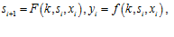
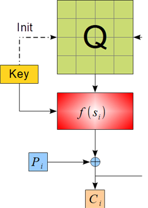
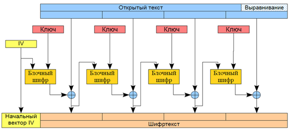
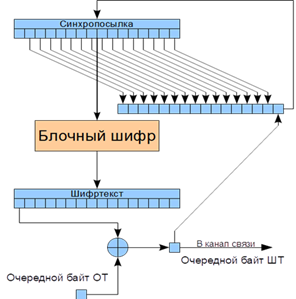
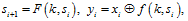
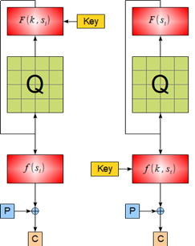
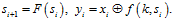
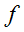
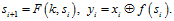

4.4.2. Классификация поточных алгоритмов шифрования
4.4.2. Классификация поточных алгоритмов шифрования
Пусть X – множество открытых текстов, Y – множество шифртекстов, K − пространство ключей и S – пространство внутренних состояний, тогда поточный шифр определяется как

где F – функция состояния, а f − функция выхода.
Различают два основных вида поточных шифров: самосинхронизирующиеся и синхронные поточные шифры.
Самосинхронизируюшиеся шифры − алгоритмы, в которых внутренне состояние генератора зависит только от n предыдущих бит шифртекста, поэтому генератор на приемной стороне автоматически синхронизируется с передающим после приема n символов шифртекста. Такой шифр имеет свойство ограниченного распространения ошибок, т. е. автоматически восстанавливает правильное состояние после обработки n символов из канала связи.
Общая схема самосинхронизирующегося шифра приведена на рис. 4.31, где f − это функция генерации ключевого потока.
 |
Рис. 4.31. Общая схема самосинхронизирующегося шифра |
Наиболее распространенный способ реализации − это применение блочного шифра в режиме обратной связи по шифртексту (CFB). В простейшем случае используются все байты шифртекста (рис. 4.32).
Рассмотрим более стойкую схему, в которой от каждого блока шифртекста используется только один байт, внутреннее состояние изменяется на каждом шаге и в канал связи не передается блок шифртекста целиком, что затрудняет применение методов криптоанализа блочных шифров.
 |
Рис. 4.32. Общая схема наиболее распространенного способа реализации поточного шифрования |
Применение самосинхронизирующихся шифров наиболее характерно для военной криптографии, поэтому открытых работ по этой тематике достаточно мало. Рассмотрим пример самосинхронизирующегося поточного шифра, который можно построить с использованием любого блочного шифра (рис. 4.33). Этот шифр является байтовым, и использует байтовый регистр сдвига размером 16 байт. Изначально этот регистр заполняется некоторым начальным значением с использованием ключа.
 |
Рис. 4.33. Пример самосинхронизирующегося поточного шифра |
При шифровании каждого байта значение передается в алгоритм шифрования, из результата шифрования берется один старший байт и складывается по модулю 2 с открытым текстом для получение шифртекста. При этом исходное значение регистра сдвигается на один байт влево, а на место освободившегося правого байта ставится получившийся в этом цикле байт шифртекста.
В случае рассинхронизации или ошибки в канале связи 16 байт будут приняты неправильно, а следующие байты опять начнут приниматься правильно.
Синхронные шифры − поточные алгоритмы шифрования, в которых гамма не зависит от открытого или зашифрованного текста.
Основная сложность, применительно к ним, заключается в необходимости синхронизации генераторов на приемной и передающей стороне. Такие шифры описываются следующими формулами:

где F − это функция обновления внутреннего состояния, а f − функция генерации ключевого потока.
Синхронные шифры классифицируются по виду зависимости от ключа (рис. 4.34):
 |
Рис. 4.34. Синхронные функции: |
Режим счетчика
Функция состояния не зависит от бит ключа и проходит через все пространство состояний или большую его часть:

Такими функциями являются счетчики и регистры с линейной обратной связью с максимальным периодом и др. Их стойкость основана на стойкости выходной функции  .
.
Режим внутренней обратной связи
Выходная функция  не зависит от ключа:

Ключ может использоваться только для задания начального состояния и его обновления в процессе шифрования.
Если в процессе передачи произойдет искажение хотя бы одного бита, то вся остальная часть сообщения будет расшифрована неверно и для восстановления правильного приема потребуется выполнить повторную синхронизацию. Обычно это выполняется вставкой в сообщение специальных маркеров. Синхронный потоковый шифр может быть реализован с помощью блочного шифра в режиме обратной связи по выходу (OFB).
Так, например, синхронный поточный шифр A5, применяемый в сетях стандарта GSM в Европе, использует фреймы размером 228 бит и начальное значение определяется из номера фрейма (рис. 4.35).
Рис. 4.35. Принцип синхронизации в поточном шифре A5 |